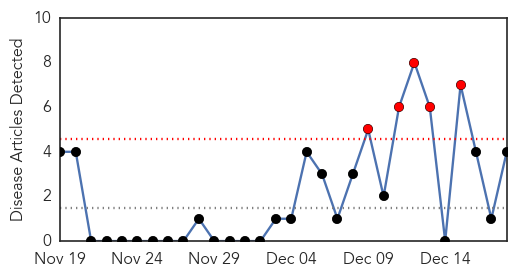
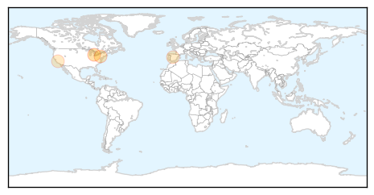

Pertussis
30-Day Web Trend
5 alerts, 0 warnings

30-Day Twitter Trend
0 alerts, 0 warnings

Article Locations
Article Confidences

Top Articles:
Top Tweets:
-
No tweets found for Dec 18, 2014
Swine Flu
30-Day Web Trend
3 alerts, 0 warnings

30-Day Twitter Trend
1 alerts, 0 warnings

Article Locations
Article Confidences

Top Articles:
- 1.000
- Swine Flu Death Toll Touches 26; Symptoms and Remedies
- 0.999
- Three Swine Flu Deaths in One Day in Hyderabad
- 0.999
- 3 H1N1 deaths in Hyderabad lead to epidemic fear
- 0.998
- Telangana hushes up swine flu death as more cases pour in
- 0.995
- 3 Swine Flu-Hit 'Quit' Gandhi for Better Treatment
- 0.995
- Three swine flu deaths in Hyderabad in two days
- 0.993
- Swine Flu Kills 103 in Gujarat, Women More Prone
- 0.991
- 3 H1N1 deaths spark epidemic fears
- 0.981
- No Shortage of Swine Flu Drugs, Says Rajaiah
- 0.966
- Chennai Girl Dies after Contracting Swine Flu
- 0.694
- Emergency Medical Services conduct disaster drill
Top Tweets:
-
No tweets found for Dec 18, 2014